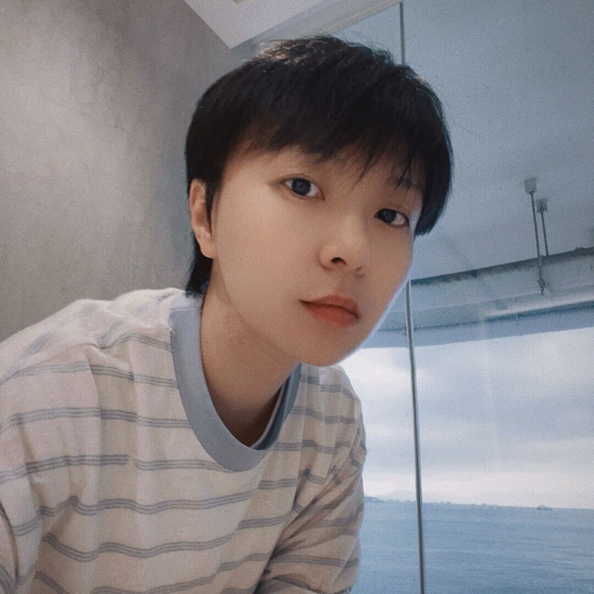

I started in the trenches of social media operations, writing, editing, and optimizing content daily. Over five years across media (广告门), brand consulting (念相), and PR (鹰飞公关), I learned the difference between content that performs and content that builds brands.
Today I work as a strategist who bridges the gap between consumer insight and brand expression. My approach starts with emotional truth, moves through rigorous category analysis, and lands on brand roles and content systems that earn their place in people's lives.
I don't sell frameworks. I sell clarity.
我从社交媒体运营的一线做起，每天写、编、优化内容。在广告门(媒体)、念相(品牌咨询)和鹰飞(PR)的五年里，我学会了区分"能跑量的内容"和"能建品牌的内容"。
今天我作为策略师，在消费者洞察和品牌表达之间搭建桥梁。我的方法从情绪真相出发，经过严格的品类分析，最终落在品牌角色和内容体系上——让品牌有资格在人们的生活中存在。
我不卖方法论框架。我卖的是"想清楚了"。
Goldwin social retainer, Peninsula Boutique social, Costa campaign. Built 12-month growth: +10K followers on WeChat and Xiaohongshu for Goldwin.
Goldwin社交运营、半岛精品店社交内容、Costa campaign投放。实现Goldwin公众号+小红书双渠道12个月涨粉各1万。
Corporate PR, brand case packaging, social content for a top-tier brand consultancy. Grew Xiaohongshu following to 4.5K.
公司PR传播、品牌案例包装、社交内容运营。小红书涨粉至4500+。
100+ original articles, 1M+ impressions, grew WeChat followers by 30K+ and Xiaohongshu by 12K in one year.
100+原创文章，100w+阅读触达，年涨公众号粉丝3w+，小红书粉丝1.2w+。
"The best brand role is the one that reduces cognitive load, not adds to it." "最好的品牌角色，是减少消费者的心理负担，而不是增加。"
Why the skincare industry's pursuit of "more" has left consumers exhausted, and what brand role can help.
为什么护肤品行业的"更多"追求让消费者筋疲力尽，以及品牌角色能做什么。
Consumer InsightPositioning as a low-pressure companion: when it works, and how to operationalize it.
把品牌定位为低压力陪伴者：什么时候有效、怎么落地。
MethodologyWhy pitching strategy first is wrong, and a better narrative structure for winning proposals.
为什么从策略开始讲提案是错的——以及更好的叙事结构。
PitchingHow game mechanics refresh stale categories, and where most brands get it wrong.
游戏化机制如何刷新沉闷品类，以及大多数品牌错在哪里。
Trends